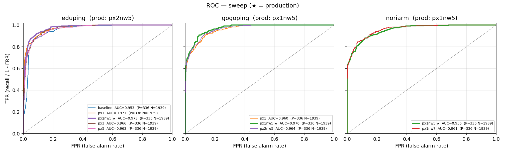
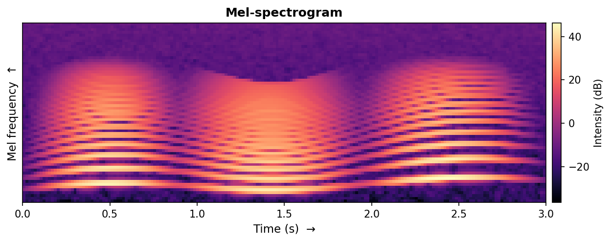

Q&A · 05 · 호출어와 STT·TTS
담당 · 박우림
호출어("에듀핑/고고핑/노리암")는 서버로 보내지 않고 브라우저에서 직접 인식합니다. 호출어가 들릴 때만 서버 게이트를 열어, 항상 켜진 마이크 부담을 덜어냅니다.
사람 목소리 구간만 통과
멜스펙트로그램 변환
임베딩 추출
로봇별 호출어 점수화
점수 임계값 0.9 를 연속 2프레임 넘겨야 호출로 인정 — 단발 잡음으로는 깨어나지 않습니다.
호출어 모델은 못 알아듣는 비율(FRR)과 엉뚱하게 깨는 비율(FAR)의 트레이드오프입니다 — 한쪽을 낮추면 다른쪽이 오릅니다. 둘 다 낮추려 학습 데이터와 옵션을 다듬었습니다.

세 로봇 sweep ROC — production(굵은 선)이 모두 좌상단(FRR·FAR 동시에 낮음).
px (prefix oversample) — "에듀"처럼 앞 두 글자만 말한 가짜를 학습 중 N배 더 보여줘 두 글자에 안 속게 한다. nw (negative weight) — 오답(negative) 페널티를 N배로 키워 "의심스러우면 거부". 둘 다 키우면 FAR↓·FRR↑ → 로봇별로 낮춰 균형을 잡았다.
production 은 ROC 좌상단 — AUC eduping 0.973 · gogoping 0.970 · noriarm 0.956. noriarm 은 AUC 최고 모델 대신, 모음이 비슷한 단어 오인식을 잡아주는 모델을 일부러 골랐습니다.
WebRTC 로 올라온 음성을 Silero VAD 로 발화 구간만 잘라 faster-whisper(한국어)로 받아쓴다. GPU 면 small·float16, CPU 면 base·int8.
답변을 edge-tts(ko-KR-InJoonNeural)로 합성해 WebRTC 오디오로 보내고, 브라우저가 음절에 맞춰 입 모양(lip-sync).
STT 인식률을 위해 현재 모드에서 나올 단어를 힌트로 주입 — 활동어·목적지·음식 이름을 Whisper 디코딩 힌트로 넣어 짧은 발음의 오인식을 줄인다.
TTS 도중 호출어가 다시 들리면 barge-in 으로 즉시 끊고 새 사이클 — WebRTC 에코 제거 덕에 로봇이 자기 목소리엔 깨어나지 않습니다.
호출어 파이프라인의 ② 단계입니다. 마이크 소리(PCM, 숫자 배열)를 AI 가 알아보기 쉽게 "시간 × 음높이 × 세기"의 2D 그림으로 바꾼 것입니다.

가로 = 시간, 세로 = mel 음높이, 밝기 = 그 시점·음높이의 소리 세기. 가로로 뻗은 줄무늬가 사람 목소리의 하모닉입니다.
raw 숫자 배열보다 "어떤 소리인지" 특징이 잘 드러나, 거의 모든 음성 AI 의 표준 입력 형식이다.
사람은 저주파의 음높이 차이를 더 세밀하게 구별한다. 그 청각 특성에 맞춰 세로축을 저주파는 촘촘, 고주파는 듬성하게 휜 척도가 mel 이다.